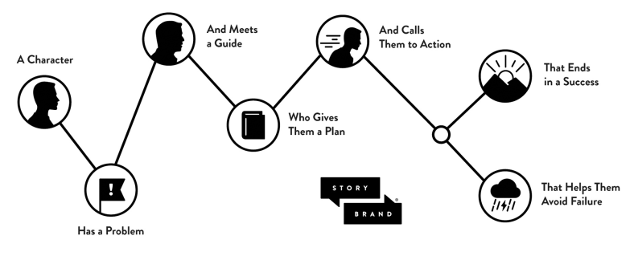

Premise
- People want to survive and thrive. They are the main character in the movie of their own life and they have problems. Life is busy and hard and complicated and they don’t want to waste energy figuring out if you can help them.
- Good marketing shows that the product has an obvious benefit for the customer. How does your product improve someones ability to “survive and thrive”?
- Cut through noisy and challenging world by having a super quick and easy to understand message. Don’t be clever, be clear. Don’t make the customer spend calories trying to figure out how they will benefit from your product.
- Stories are intuitive and leverage many psychological features. They organise information in an intuitive way and are a great way to combat noise and gain attention. People are compelled to pay attention until all the “story gaps” have been closed.
Could a caveman look at your website and answer these questions:
- What do you offer?
- How will it improve my life?
- What are the next steps?
Story Gaps
- A gap between a character and what they want. Will they find their way to success, overcome their challenges, etc.
- Cadence and momentum are defined by the creation and fulfillment of story gaps.
- If you fail to define something that the customer wants, you fail to open a story gap.
- This makes the story uninteresting because there isn’t a question that requires an answer.
Story gaps work because we want things to resolve. It’s like singing Twinkle Twinkle Little Star but stopping before the “are” on the last line. You need to hear the last note of the melody for the tune to feel complete.
Pare down the customers desire to a single focus. Make your brand known for single specific desire and helping people get it.
Don’t clutter the story by diluting the hero’s desire with other desires. You can eventually develop subplots.
Apple
When Apple released the Lisa computer in 1983, Jobs bought a 9 page ad in the New York times listing the computers features. When Jobs returned to Apple after being fired, (and after partly founding Pixar, which tells stories) Apple became a customer centric company, and their marketing was about the customers. 9 pages became 2 words - “Think Different”. A message about their customers, and their customers need to survive and thrive.
Apple isn’t the hero in the “Think Different” brand, the customer is. It’s the same with Nike - the athletes are the heros, and you can become a (hero) athlete with Nike’s help. Apple plays a role more like Q in James Bond, giving the hero what they need to win.
Stories
A Hero → has a Problem → and meets a Guide → who gives them a Plan → and calls them to Action → that ends in Success → and helps them avoid Failure.

Hero
The customer, not you. You are the guide. The customer is the main character in their life and is battling internal and external adversity it order to survive and thrive. Heroes have weaknesses, the guide is usually the strongest character.
A story starts with a character who wants to overcome external challenges that pose internal and philosophical problems.
Your first task is to create a story gap that implicitly asks “Will the hero get what they need?”
You need to define the character’s ambition at the beginning, so that the audience knows what’s at stake and what kind of a story it is. This messaging implicitly tells them how they could benefit and why they should spend attention.
Problem
Customers are more motivated to solve internal problems than external.
If you identify a customer’s problem then you show that you understand them. This is a great hook because they will then relate to your narrative.
The more we talk about the problems our customers are experiencing, the more interest they will have in our brand.
Every story needs a villain, which is the personified problem. The germs are personified, envy is personified, etc. The diminished social status is personified by someone with more status being villainized.
The villain
- should be relatable - readers should recognize that the villain should be disdained.
- should be a root source - frustration is what the villain makes us feel. High taxes are the cause, and are therefore the villain.
- should be singular - just one villain, keep it simple to cut through the noise.
- should be real - don’t be a fear monger. Fight a real problem on behalf of your customers.
There are three types of problem
- External - A barrier to stability that must be removed - My business isn’t growing fast enough, profits are too small.
- Internal - I have self-doubt. Do I have what it takes to succeed?
- Philosophical - I deserve to be successful, my hard work should be rewarded. Failure would be unjust.
The villain initiates an external problem that causes the hero to encounter an internal problem that is philosophically wrong or unjust.
The purpose of the external problem is to manifest the internal problem. Customers should recognise and relate to both types of problem.
Put your product in the context of a type of survival they they want. Otherwise there isn’t a story gap. Translate the external problem into several survival categories:
- Resources - Conserving or accumulating money or time
- Social - Gaining status or a social network
- Generosity - Most people are not as Darwinian as we’ve been led to believe, they want to be empathetic and caring
- Purpose - Give customers an opportunity to be generous and participate in something greater than themselves - “the chief desire of man is not pleasure, but meaning”.
The only reason that customers buy is because the external problem that your product would solve is causing an internal frustration.
If you identify and articulate that frustration, and then clearly, confidently and repeatedly offer to solve it along with the original external problem then you bond with your customer. You’ll have positioned yourself more deeply into their internal narrative and substantially differentiated your brand.
Philosophical problems are important because people want to be involved in something larger than themselves. It adds depth and meaning. Representing (and solving) a philosophical problem gives customers a way of expressing themselves that they wouldn’t otherwise have.
If you can resolve all three problems in the same transaction, then customers will experiences a wave of relief and pleasure, and love your brand.
When Anakin Skywalker blows up the Deathstar by aiming the perfect shot, he defeats the external problem (the enemy army), his internal problem (self doubt) and the philosophical problem (injustice).
Your CTA is the action that must be taken to close the final story gap
Checklist:
- Is there a single villain that your brand stands against?
- What external problem is that villain causing?
- The internal problem is probably found by considering how the external problem makes your customer feel?
- What is unjust or wrong about the suffering caused by that villain?
Our hero is being challenged - will they be able to solve their problem? The only way to find out is to engage with the brand.
Guide
Customers aren’t looking for another hero, they are the hero in their life. They are the main character which the movie of their life revolves around. They’re looking for a guide because they need help.
A persons life is made up of many acts - “doorways of no return”. Each life is unique but we all have commonalities. We are all on transformational journeys with common elements.
Story chapters are book-ended by events. These events are always instigated by external actors or events beyond their control.
Heroes need a guide who is trustworthy and earns respect. If they didn’t need a guide their wouldn’t be narrative, or a problem. Everyone is looking for a guide to help them solve their problems.
We wake up each morning self-identifying as a hero. We are troubled by internal, external and philosophical issues. We know that we can’t solve our issues on our own.
This insight has consequences and raises questions, it means our story isn’t about us but about others. We can aspire to be someone else’s guide, but not their hero. It shows why the search for meaning is innate, but can only be resolved by becoming a servant or guide.
Stop losing sleep over the success of your company and start losing sleep over the success of your customers.
In stories, heroes are not the strongest characters, they have self-doubt and are often ill-equipped. They are often reluctant, and are thrown into the story by external events. They are “chosen by destiny.”
In contrast, the guide has already “been there and done that.” They have already conquered the hero’s internal and philosophical challenges in their own backstory.
The guide is the one with authority which the authority instinctively recognises and accepts. The guide has much more authority than the hero but the main character is still the hero.
Those who realize that the epic story of life is not about them end up winning in the end. This is paradoxical. Those who think they are a hero and win usually end up being remembered as a villain.
Characteristics of a guide
Empathy and Authority are a precise one-two punch.
1. Empathy → Understanding → Trust
When we empathise with customers we show that we understand them, and understanding produces trust.
People want to be seen, heard and understood. This is the essence of empathy.
Key phrases in your marketing copy could be:
we understand how it feels to …
no-one should have to experience …
like you, we are frustrated by …
Expressing empathy isn’t difficult. Once you’ve identified your customers internal problem, let them know that you understand and would like to help them find a resolution.
Brains like to conserve calories, energy, effort, time, so when a customer realises they have a lot in common with a brand, they fill in any gaps with trust. A customer will “batch” their thoughts, which means they are thinking in chunks rather than in details. Commonality, whether in music taste or values, is a powerful marketing tool.
2. Authority
No one likes a know-it-all and no one wants to be preached at… But people do want you to establish competence.
When looking for a guide, a hero trusts someone who has demonstrable competence. The guide should have some serious experience helping other heroes win their day, but doesn’t need to be perfect.
There are four ways to add authority (competence) to your marketing without being arrogant:
- Testimonials
- Logos
- Statistics
- Awards
Meeting a brand is like meeting a person,
- Can you help them live a better life?
- Can they associate their identity with your brand?
- Can I respect this brand?
- Can I trust this brand?
Recap
- We started the narrative by identifying something that the hero wants.
- Then we created intrigue and tension by defining the hero’s problem. The audience wants to know if we can help them overcome the problem!
- Then we introduced ourselves as the guide and established authority, empathy and trust.
What next? Making a purchase always involves a small risk of wasting money. This risky element makes a purchase somewhat similar to starting a relationship. There is a potential downside, the customer might end up feeling foolish and regret their decision.
Imagine a customer trying to cross a river to get to their purchase. They can hear the sound of a waterfall downstream. If they try to cross it by making a purchase then there is a chance that something bad could happen. Put stones in the river so they know how to safely walk across, step by step.
The stones are the plan.
Plan
In a movie, the guide gives the hero a plan. The plan tightens the focus of the movie and creates a “path of hope” for the hero that might, possibly, lead to the resolution of the hero’s problems. It creates a story gap and implicitly creates questions that the audience want to be answered.
A good plan removes risk and explains what to do. If we don’t guide customers, they experience a little bit of confusion and use that confusion as an excuse to not purchase.
Even though the setup or purchase or after-purchase steps are obvious to us, they are not obvious to customers. Give them a plan and they will feel more confident about purchasing.
Heroes trust a guide who has a plan. People are looking for a philosophy then can embody, or a series of steps they can take to solve their problems.
Customers want to know where you can take them. Unless you can take them somewhere they want to go, why would they listen? The marketing goal is that every potential customer knows where we want to take them. Define a desire for your customer, and your marketing story will have a powerful hook.
There are two kinds of plan. Both work by earning trust and offering the customer a clear path to stability.
- Agreement Plan
- Process Plan
Process Plan
The minimal (3 - 6) steps required to buy or get benefit from the product after purchase, or a mixture of both. E.g.
- Make an appointment.
- Allow us to create a customized plan.
- Let’s execute the plan together.
A process plan removes confusion from the customers journey. When they see the plan they think “oh that’s not difficult, I can do that” and then they purchase.
A post-purchase process plan would alleviate confusion about how the customer would use the product.
Agreement Plan
Agreement plans are about alleviating fears. It’s a list of agreements you make with the customer that are designed to alleviate their fears of doing business with you.
An agreement plan can also work to highlight shared values.
Give the agreement plan a good name and it can increase the perceived value of your product. “the easy-installation plan”, “your best nights sleep ever”, etc.
Agreement plans can work in the background, they don’t have to be on the landing page, though they could be.
Make an agreement plan by creating a list of all the things a customer could be fearful about when doing business with you (haggling for price, interacting with a pushy salesman, buying a defective product) and then create an promise that would nullify that fear.
A Call To Action
So far, we’ve defined a desire, identified their challenges, empathized with them, established our competency and given them a plan.
Heroes only take action when challenged by an external force. They don’t take action by themselves, they must be challenged. This is just how humans are.
We are the external force that guides our customers to success.
Heroes need to be challenged by external forces. Calls to action should be clear, and should be repeated over and over. Above the fold, in the center of the page. Also in the navbar. And also repeatedly as they scroll down the page.
Customers are bombarded with adverts and calls-to-action all day every day. They are ignoring things and filtering out noise all the time. So don’t be shy or subtle. Be very clear. Make it very simple. If you have confidence in your product, make confident calls to action.
Direct Calls
- Buy Now
- Schedule an Appointment
- Order Now
- Call Today
- Register Today
Repeat the same (singular, simple) call to action again and again down the page.
Transitional Calls
- Download our free PDF guide to growing your business
- Free information - advice, guides, whitepapers, reports
- Giving something away for free
- Testimonials
- Samples
- Free-trials
A good transitional CTA does three things:
- Changes the customers perception of you - it establishes your expertise and authority.
- Creates reciprocity, you offer them something of value before you ask for their money.
- Positions you as a guide for the next steps.
Use both types of CTA (direct and transitional) in your messaging. Then customers will understand (simply and without burning calories) what you want them to do in order to solve their problems.
What is at stake?
Stories live and die by a single question; “What is at stake?” If nothing is about to be gained or lost then nobody cares. If there is nothing at stake in the story then there is no story, it’s just not interesting.
If there is no benefit to buying the product, then why buy it?
You have to show the customer the cost of not buying the product.
Avoid Failure
The story remains interesting as long as the hero is teetering on the edge between success and failure. A hero in a story only ever has 2 motivations - to escape pain or experience something good. Life is like that too, our desire to avoid pain motivates us to make a change.
There needs to be meaningful and consequential stakes in the story, otherwise it isn’t interesting. Each scene needs to move the hero either closer to or further from their tragic external threat.
A brand needs to answer the “what if I don’t buy” question otherwise the customer can’t answer the “so what?” question - the stakes need to be clearly, simply, concisely communicated. Probably stake, not stakes.
You can do it humorously or lightly. Don’t make a big negative scary thing out of it - failure is salt to add flavor, not a main marketing ingredient. Compare the fear to the peace and stability that could be achieved. If you show the pain “before” and contrast it to peace and stability “after” then you’ve opened and closed a story loop.
Blog titles, email subjects, headlines, can all contain elements of potential failure to convey a sense of urgency. Bring up the negative stakes a bit.
People fear losing $100 more than they desire gaining $100 - loss and pain is more motivating than reward and peace.
Recipe
- Let the reader know they are vulnerable to a threat. “X% of Y get W”
- Let the reader know that since they are vulnerable, they should take action to reduce their vulnerability. “Make sure this doesnt happen and protect yourself”
- Give the customer a clear, concise simple plan to reduce their vulnerability. “We offer the thing you need”
- Challenge people to take the next step right now. The CTA. “Call us today to arrange an appointment”
Agitate a bit of fear, and then return the reader to peace and prosperity, all within 1 or 2 paragraphs.
What are you helping your customers avoid?
It’s only a little salt to add flavor. If it’s too little, customers won’t know why your product is important. If it’s too strong it’ll be off-putting.
End with Success
Humans are looking for resolution to their external, internal and philosophical problems. They can achieve this though status, self-realization, self-acceptance, and transcendence (among other things).
If you product or service can help people achieve this then it should be a central part of your brand promise.
People want to change their lives and be taken into a new reality. Tell them how their lives are going to improve - peace, status, confidence, abilities, preparedness.
People want a vision of a happy ending. Compare these two statements: “We’re going to put a man on the moon” or “We would like a highly competitive and successful space program”
Use this table to show how your customer’s lives will change. It will give lots of good copy for your marketing:
| Before your brand | After your brand | |
|---|---|---|
| What do they have? | ||
| What are they feeling? | ||
| What’s an average day like | ||
| What is their status? |
Talk about the end vision really clearly. And use images of happy, successful, powerful people enjoying the benefits of your product. Say the benefits loudly, confidently, clearly, simply, repeatedly.
Talk about your end-vision for their lives once they’ve benefited from your service.
Show the customer a vision of how great their life will be if they do business with you.
Ultimately, the end of the story should be a list of resolutions to your customers problems. How do they feel and how have philosophical/justice questions been resolved?
Stories usually end in one of three ways:
- The hero gains status or power
- Offer access - get a free coffee.
- Offer a premium - skip the line.
- Create scarcity - write “limited” on it.
- Identity association - wear a Rolex and be associated with what Rolex stands for.
- The hero becomes whole by being unified with someone
- The hero needed something they couldn’t get themselves, and external provision has saved them.
- Reduced anxiety, or more security.
- Reduces effort, or more convenience.
- More time, reaches an aspirational lifestyle.
- The hero has some internal realisation (coming of age) that gives them
confidence to overcome their circumstances or internal shortcomings and become “whole” and wise.
They can achieve inner peace and know they reached their potential.
- Inspiration - chariots of fire - you can also run really fast
- Acceptance - fashion brands doing positive body image
- Transcendence - greater purpose and meaning - fair-trade coffee
People want your brand to participate in their transformation
A hero needs someone else to step into their life, tell them they are different and special and better. That someone is a guide, that’s you.
Offering an aspirational identity to our customers adds a lot of value to our products and services. Realise that your customers want to transform and improve themselves.
People are looking for a guide. Everybody wants to change either into someone better or someone more self-accepting. You are helping them become wiser, fitter, more equipped, accepted or peaceful.
What does the customer want to become?
- what is their aspirational identity?
- what kind of person do they want to be?
- How do they want their friends to talk about them?
Being a guide is a position of the heart, not just a marketing tactic. Lose sleep over your customers problems instead of your business. Commit to solving their internal, external and philosophical problems, and give them a vision to aspire to.
Customers needs to be told very clearly how much other customers have changed and how far journey has taken them. Usually, the hero is deeply flawed right up until the final climactic scene.
Not all elements of a story should be used evenly.
Implementation
Websites
- Above the fold, use the one-liner. It’s one sentence saying what’s in it for the customer. What problem do you solve, what aspirational identity do you offer. It will also give customers words they can use to tell others about your business.
- Big obvious calls to action, in multiple places. Don’t be timid.
- Customers read in a Z shape.
- People don’t read websites, they scan them. Repeat the important things
so that they are understood by quick readers. Use very few words.
- The fewer words you use, the more likely they will be read.
- Perhaps 10 sentences on the entire landing page
- Increase the amount of text towards the bottom. The top needs to be short, fast, positive and obvious.
- Use a “read more” button to expand longer text, then customers have the option if they want.
- Place a transitional call to action next to the main call to action. “Download a guide” next to “buy now”. Put the transitional CTA in less bright colors.
- Repeatedly ask people to buy, twice above the fold and then in subsequent sections. If you don’t tell people what to do then they won’t do it.
- Include images of success - people enjoying the benefits - resolved problems, aspirations achieved, closed story loops. A sense of health, well-being and satisfaction.
- The flow of the landing page should follow the StoryBrand framework, albeit not exactly.
Corporations
Not applicable, but if you’re a manager and you give your team a narrative they can fit themselves into I guess they’re going to have more purpose, confidence and meaning.
Marketing Roadmap
- Create a one-liner. Say how can you make their lives better in an engaging way.
- Create a lead generator and get qualified email addresses. A guide, a free 30 minute consultation, a voucher, etc.
- An automated email campaign - a weekly email, 3 with nurturing advice and then 1 with a CTA. All automated.
- Collect and tell stories of transformation. Almost all stories are about the transformation of the hero. Tell this story and people will understand what you are offering.
- Create a system that generates referrals. If word of mouth is so powerful, incentivize it.
One-liner
The one-liner is a statement. It could be more than 1 sentence, but its supposed to be super short. It’s the equivalent of a logline for a movie. Keep editing it until you find a version that works.
Memorizie it, put it on your website, and include it in every piece of marketing collateral you create.
- You could tell this to anybody and they would understand what you do.
- Helps people realize they need your services.
- Provoke imagination and intrigue.
- It should include:
- A character (“A busy mom”, “A retiree”)
- A problem - don’t miss an opportunity to talk about a customers challenges. Define the problem as vitally important, it opens a story gap and customers will want you to close it.
- A plan - hint at it. You can’t explain it all in a one-liner.
- Success - paint an image of life after a custom has bought your services.
Example answers to the question “What do you do?”:
“We provide busy moms with a short, meaningful workout they can use to stay healthy and have renewed energy” vs “I run a gym”.
“We help retired couples who want to escape the cold avoid the hassle of a second mortgage while still enjoying the warm beautiful weather of Florida during the winter” vs “I got involved in real estate a few years ago and when we had out second kid we moved to Florida and then….”
Create a lead generator
- A guide to download.
- A free webinar or online course.
- Software demo or free trials.
- Free samples.
- Live events.
No need to reinvent the wheel, what are others doing?
You can give away quite a lot of value that is easy to consume in an email or PDF - people will consume it quickly and will probably be happy to pay for a chance to learn in a more thorough and detailed context.
Downloadable guides etc should be about 3 pages in length.
Be generous, explain the “why” and give away as much of the “how” as possible.
An automated email campaign
Even if customers don’t click the links in the email, they keep seeing your brand and they become familiar with it. When they need your services you will be the go-to brand in their mind. The relationship and association is already built.
Nurturing emails and Call-To-Action emails - 3:1 - put real value in the nurturing emails.
Don’t be passive in the CTA emails - you want them to buy, so tell them, repeatedly, and make it easy.
- Talk about a problem
- Describe a product you offer that solves the problem
- Describe what life can look once the customer has bought your product and solved their problem
- Call the customer to an action that leads directly to a sale.
Similar to a nurturing email, a direct action email also describes a problem and a solution, but in the direct email the solution is a product you sell and there is a strong call to action. A lot of the content can be taken from the StoryBrand script.
Collect and tell stories of transformation
A great testimonial gives customers the gift of going second, and lowering the riskiness of purchasing.
A good testimonial will:
- showcase the value you create
- the results
- the experience
- what transformation has occurred?
Few things are more important to a good story than a hero that experiences an external and internal and philosophical transformation. This is because everyone desires to be transformed in someway.
People love businesses that help them transform in some way.
Questions to get a good testimonial: 1. What was the problem you were having before you discovered our product? 2. What did the frustration feel like as you experienced that problem? 3. What was different about out product? 4. Take us to the moment when you realized our product was actually working to solve your problem? 5. Tell us what life looks like now that your problem is solved or being solved?
Create a system that incentivizes referrals
- Identify your existing ideal customers
- Give them a reason to talk about you - create a video or a PDF that a customer can send to their friends to help them introduce your brand and explain the value you deliver.
- Offer a reward - a discount, more access, extra samples, etc